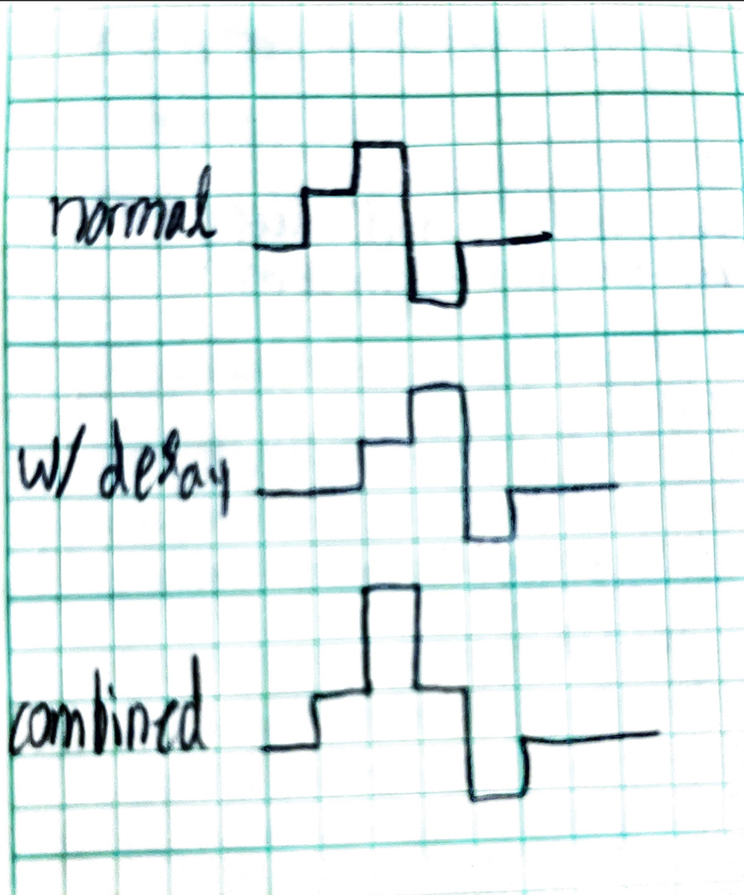
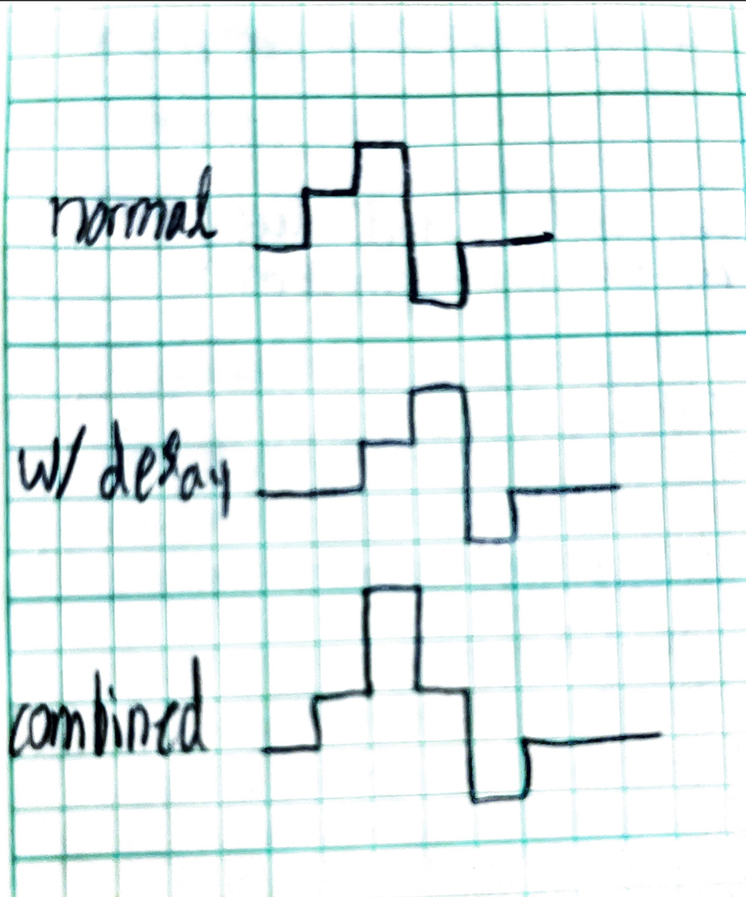
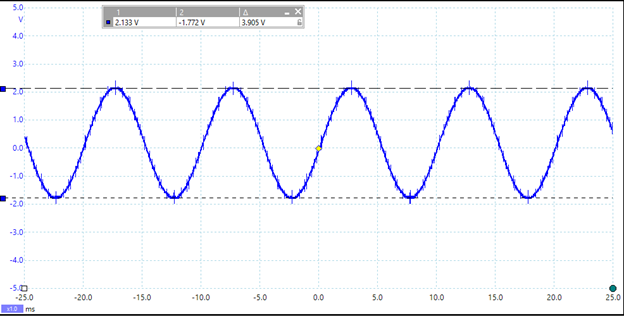
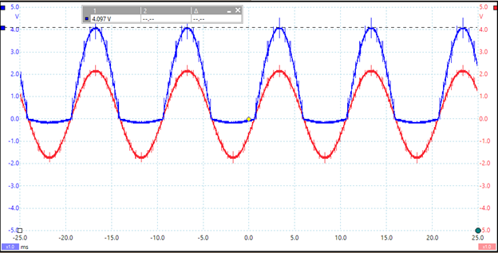

Lab Report - Lab 8: Convolution TIMS Week 1
Introduction
The purpose of this lab was to utilize the TIMS unit to demonstrate the delays and resulting shifts of signals as they are placed through different modules. The lab also aimed to show how the convolution of a signal is the result of multiplying the s-domain equivalents of the signals. This is done utiling the laplace module and triple adder modules.
Procedures
Part 1
The first section of the lab involved setting up the TIMS unit and getting a system that shows a pulse every 32 period. Below is a screenshot of that signal against the clock signal. The system shows a clock pulse every 32 periods because the digital utilities module is used to divide the original frequency multiple times to get it to 1 every 32 periods.
Part 2
Part 2 of the lab procedure was to implement the signal in part one into a system given by the lab. The output of this system has a specific delay after the input signal. The figure below shows the delay of the output signal and a measurement of the amplitude of each delayed period.H(0)

H(1)

H(2)

Part 3
In this part of the lab the has the CLK rate to be halved causing the SYNC pulse to be doubled. Withthis pulse width doubled it is easy to see how the output is delayed one period over. Below is the output recieved in picoscope when adding the original output to the delayed output signal. To show how the signal is delayed, you can draw the output from part 2 and the and the delayed output from part 2 and add them together. Below shows that result from hand drawings.

The superimposed graphs of the delayed and original signals equal the above because at each interval the combinations add up to the same value seen in the output from part 3.
To show how the signal is delayed, you can draw the output from part 2 and the and the delayed output from part 2 and add them together. Below shows that result from hand drawings.

The superimposed graphs of the delayed and original signals equal the above because at each interval the combinations add up to the same value seen in the output from part 3.
Part 4
In part 4 of the lab, we take a sine wave and rectify it using TIMS modules. The starting wave from the ARB generator has a voltage peak to peak of 4V shown below.  After rectifying the sine wave the following figure is the output.  Question 2: The rectified sine wave has double the amplitude as the input sine wave because the negative half of the sine wave is flipped to positive making the peak 4V. The S/H module takes the rectified sine wave and samples it every clock cycle to get the output shown above with the blocky output.
The S/H module takes the rectified sine wave and samples it every clock cycle to get the output shown above with the blocky output.
Conclusion
What did you enjoy about this lab?
I enjoyed using the S/H module as it was interesting to see how a digital signal can be created from an analog signal.
What didn’t go well in this lab?
It took me a while to figure out how to set up the wirings for the TIMS Unit.
How would you improve the lab experiment for future classes?
I would improve the instructions. It would be helpful to know what wirings to have at each step of the procedure.